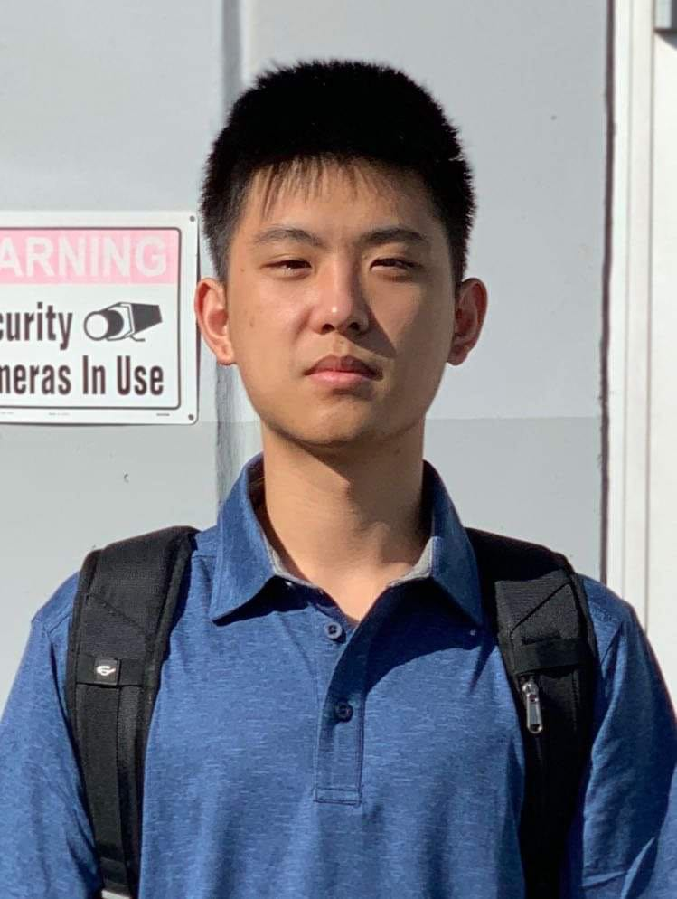

About
Hi, I am Yingeng Liu, a currently student at Rose-Hulman majoring Computer Science and Data Science. I am a passionate software engineer who is actively seeking opportunities to gain experience in computer science in various contexts and fields. I have experience in Data structure, Algorithm analysis, software development workflow in Devops environment.
As a sophomore computer and data science major, I enjoy working on challenging projects that bring improvement to people’s life.